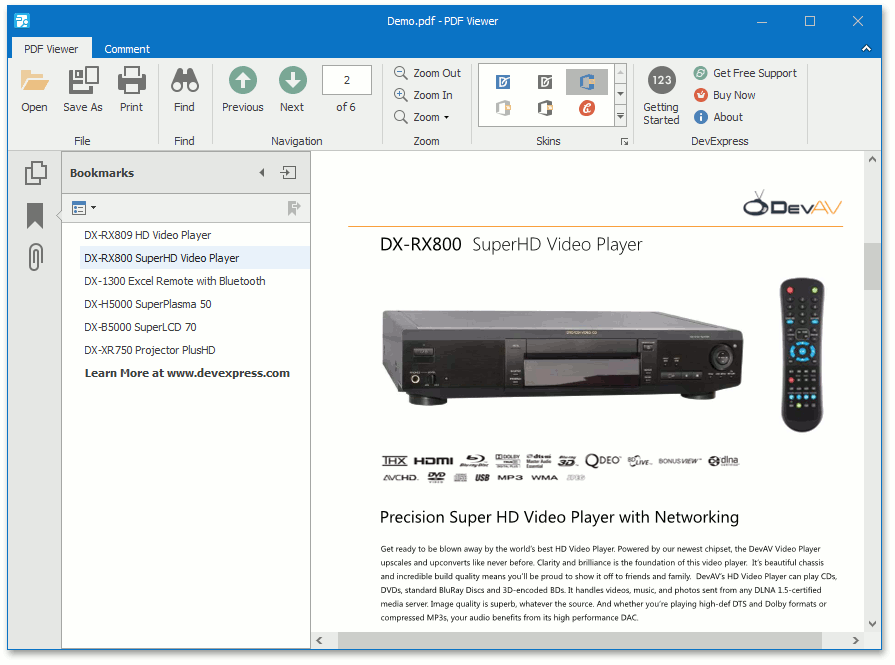
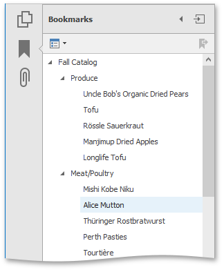
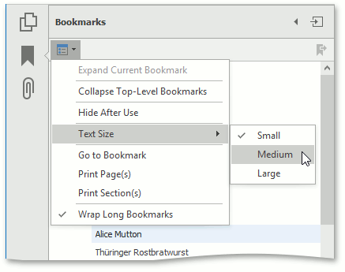

Bookmarks
The document describes the PDF Viewer bookmarks capabilities and customization options on a navigation pane.
This topic consists of the following sections.
Overview
Bookmarks (outlines) are used to navigate quickly from one part of a document to another. The PDF Viewer can show bookmarks on the navigation pane for a PDF document that contains them.
Click on a bookmark to display a page linked to the bookmark in the Viewer. Bookmarks can also open web pages.

Bookmarks are displayed in a hierarchical tree providing a convenient document overview. They can show or hide the document hierarchy in the navigation pane.
To open (or close) a bookmark item, click it with the mouse.

After the bookmark item is open, you can see its children in the pane.
Customization
To customize the bookmarks behavior, click the Options drop-down button in the Bookmarks panel, as shown below.

The available options are:
Expand Current Bookmark
Shows all lower-level bookmarks in the Bookmarks panel.
Collapse Top-Level Bookmarks
Collapses nested bookmarks.
Text Size
Sets the text size of nodes located in the PDF navigation pane to Small, Medium or Large.
Go to Bookmark
Goes to a bookmark.
Print Page(s)
Prints only pages to which selected bookmarks are linked in the document.
Print Section(s)
Prints a document section corresponding to selected bookmarks.
Wrap Long Bookmarks
Wraps long lines in the outline node text if the option is checked. If the Wrap Long Bookmarks option is unchecked, shows the outline node text unwrapped in the PDF Viewer.